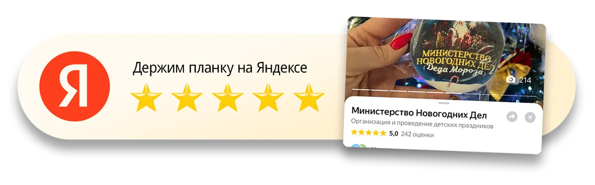

Более 1000 реальных текстовых отзывов
только с прошлого сезона!
Это скриншоты с Яндекс Карт как есть — с именами, датами и оценками. Ничего не переписано и не сокращено.
Нажмите на любой отзыв, чтобы открыть его крупно
